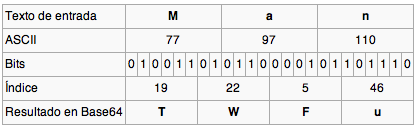

base64 es un método de codificación de textos que utiliza únicamente los caracteres imprimibles de ASCII. El rango de caracteres utilizado es el formado por A-Z, a-z y 0-9 más los caracteres "+" , "/". Además de ellos se utiliza el símbolo "=" como carácter de relleno.
Al utilizar 64 caracteres, éstos pueden representarse con 6 bits ya que 26=64. Base64 funciona transformando grupos de tres bytes (tres caracteres ASCII) en 4 caracteres en formato base64.
Veamos un ejemplo:

Como vemos, el caracter "M" tiene su correspondiente valor ASCII que en este caso es 77. De los 8 bits necesarios para representar este valor, se utilizan los 6 primeros para establecer la correspondencia con el primer carácter en formato base64.
Así sucesivamente hasta llegar al final del texto. En el caso de que no coincida exactamente el número de caracteres con un múltiplo de tres, se utilizará el carácter de relleno "=" para completar la secuencia. Esto provocará que la longitud de un texto codificado en base64 siempre sea múltiplo de 4.
Este formato de codificación es muy utilizado en la actualidad ya que únicamente utiliza caracteres imprimibles. Muy utilizado para codificar firmas y en algunos métodos de codificar correo electrónico.